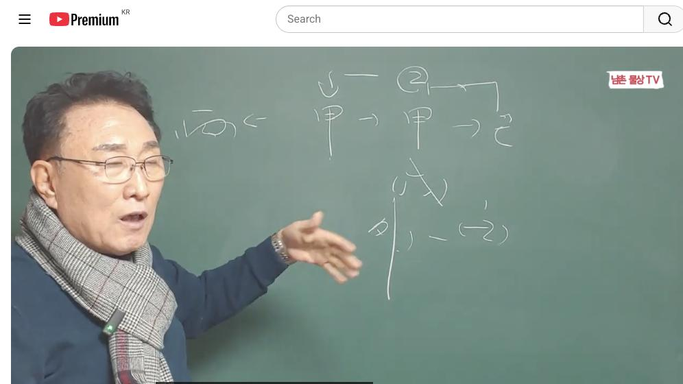
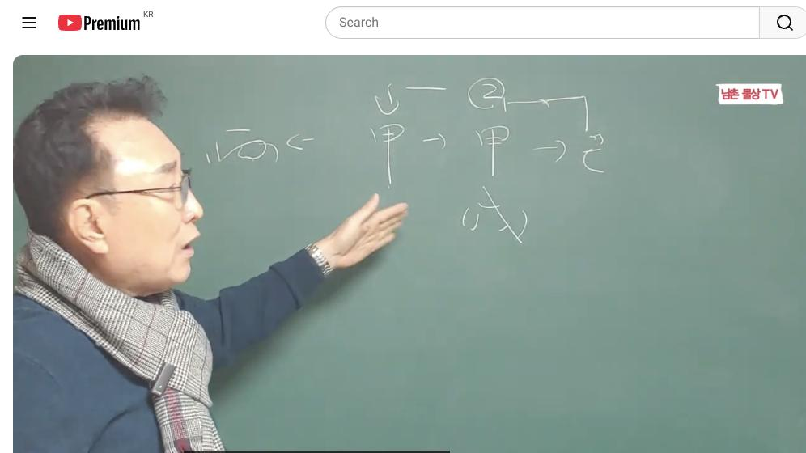

남촌물상TV 전체 문서 › 동영상 V0036
[기본원리]13강 갑목 일간 '이것'알면 잘 살 수 있다 상담문의 : 010-3139-6645

| 문서 번호 | V0036 (동영상) |
|---|---|
| 영상 URL | https://www.youtube.com/watch?v=kIdZLKrwB2M |
| 영상 ID | kIdZLKrwB2M |
| 게시일 | 2024-01-01 |
| 길이 | 20:53 (1253초) |
| 조회수 | 2,102회 (수집 시점 기준) |
| 카테고리 | Howto & Style |
| 자막 | ko (자동생성) |
| 수집 시각 | 2026-08-30 19:08 (KST) |
영상 설명 (YouTube 설명 원문 그대로)
갑목 일간 '이것'알면 돈 벌고 잘 살 수 있다 #갑목 #일간 #기본원리
전체 자막 (459구간 · 타임스탬프 클릭 시 해당 장면으로 이동)
[0:01][음악]
[0:07]자 안녕하세요 어이
[0:11]시간부터는 갑을병정 무기형 인기까지
[0:15]식간에 대해서 차근차근 한 개씩을
[0:18]설명을 드리고자 합니다 자 첫째
[0:21]시간에는 이제에 갑목에 대해서 설명을
[0:23]드릴 건데요이
[0:26]갑목이 갑목이 살아나가는 방법이
[0:29]뭐부터 살아 가 됐는가 자 우리
[0:32]물상론 그래는 갑목이 목인대 나무가
[0:35]살아갈 수 있는 방법은 첫째 땅이
[0:36]있어야 된다는거다 땅 땅이라는 것은
[0:40]갑목이 사는 것은 넓은 땅 무토가
[0:42]필요하다는 얘긴데 목극토
[0:45]반드시 나무가 살아나가 되는이 재성이
[0:48]꼭 필요하다 자 그다음에 나무가
[0:51]심어졌다 가정하 때는 뭐냐 나무가
[0:54]성장할 때는 물이 필요하죠 그럼 다음
[0:57]뭘 가냐 자 물이
[0:59]필요한데 임수 계수의 차이점이 있는
[1:02]거예요 그래서 우리는 일단 그 큰
[1:06]땅에 큰 물로 생각을 하고 설명을
[1:08]먼저 드리고 구체적인 설명을 드리고자
[1:10]합니다 자 그러면 여기에 이제 나무가
[1:13]성장했다 나무라는 것은 어떨까요
[1:16]반드시 꽃을 피워야 되는게 정석이죠
[1:19]그럼 우리는 여기에 뭐가 들어갈까요
[1:21]평화라는 햇빛이 있어서이 기존적인
[1:25]설명이 야만이 무상이 살아가는
[1:27]방법이에요 그러 목이는 방법에서는 자
[1:32]넓은 땅에 산다는 얘기는 큰 땅에서
[1:36]나무가 살아간다 자 그러면 큰 나무는
[1:39]어떨까요 자주 옮기면 죽을까 살까
[1:42]자주 오면 죽는 거죠 그러면 자
[1:45]이것을 우리 인간의 삶에 비유 어떤
[1:47]얘기로 되냐하면 큰 나무는 자주
[1:50]옮기면
[2:00]같은 얘기예요 이것이 물상 해석이
[2:02]그든
[2:03]그러니까 감목 일간이 한 가정은 철두
[2:07]철기 지해야 된다는게 첫째고 그다음에
[2:11]성장을 해서 하는 것도 물이 필요하다
[2:14]자 그럼 물을 성장을 잘하게도 나무가
[2:17]성장해 그러면이 큰 나무가 성장서
[2:20]우리는 큰 역할 할 수 있는 의미를
[2:21]가지고 있는 거예요 그러면이 나무가
[2:25]저 병화에 꽃을 핀다고 가정하자 그
[2:27]꽃을 핀다는 것은 목화 통이다 우리
[2:31]학문적인 뭔가를 이룰 수 있는 그런
[2:33]모카이 길이 열릴 수 있다는 얘기다
[2:35]그다음에 오행상 뭐가 있어요 금이란게
[2:38]있죠 경금 자 그러면이 경금이 용어를
[2:42]우리는 어떻게 물상 해석을 하느냐
[2:44]쉽게해서 큰 칼 자루와 큰 칼의
[2:47]관계적으로 이해하시면 좋다고 말입니다
[2:50]그래서이 관계가 형성이 되면 우리는
[2:53]목에 큰 칼 자루와 칼로 연결된다면
[2:56]건설 분야에 일할 수 있다 이렇게도
[2:58]볼 수 있는 것이고 여러가지 방법
[3:00]구체적인 해석을 할 수가 있는
[3:02]것입니다 그래서 근본적인 체제는
[3:05]나무가 살아 갑목이 살아 수 방법은
[3:08]큰 땅에 많은 물을 가지고 살고
[3:11]햇빛이 있다고 왔을 때 목화 통이 될
[3:13]수 있는 것이고 또 금이라는 것은
[3:15]쉽게 뭐 가지치기 종류다 이렇게를
[3:18]합니다마는 우리 물상 해석에서는 칼과
[3:21]칼 자루 역할로서 건설 분야에 할 수
[3:24]있다라고게 이해할 수 있다고 보시면
[3:26]된다 자 그러면 이제 차근차근 하나씩
[3:30]하나씩을 설명을 드릴
[3:32]건데 관을 가지고 설명을 노할 거예요
[3:35]그러면 여기 갑목이 갑목이 자 갑목이
[3:40]두 개 있다 자 갑을 차근차근 해
[3:43]나갈 건데 갑목이 두 개 있다는
[3:46]얘기는 어떨까요 땅이 넓은 땅이 두
[3:48]개 있으면 더 좋겠다 그럼 무슨
[3:50]얘기냐 무토가 있으면 더 좋을 건데
[3:55]그러면 자 시서 우리는 물상이 갑목이
[3:58]하나 일대일로 봤을 때 좋다고이기
[4:00]기한 건데 두 개 있다 보 갑갑하다
[4:02]그럼 올해가 무슨 년이에요 갑진
[4:04]년이에요 그 갑진년 같은 경우에 갑목
[4:08]일간은 가감할 수 있는 일이 생기는
[4:11]거예요 그래서 어떤 일을 행할 때
[4:14]가감하게 일이 진행 있으니 이걸
[4:16]해체해 나가는 방법이 필요할 것이다
[4:18]그럼 어떻게 할까요 어떤 운이면
[4:21]좋을까요 쉽게해서 같다면 기토가 와서
[4:24]각기 합을 해 경우에 을목이 되면이
[4:28]을목이 등락에 할 수 있는 것이 이게
[4:30]법이에요 그래서
[4:33]올해 갑진 년에 갑목 일간을 대주
[4:36]본다면 감목 일간이 그 갑갑함을
[4:40]제거하는 것은 기토 작은 땅을 가지고
[4:43]이게 합을 하게 되면 제거할 수 있는
[4:46]능력이 되기 때문에 크게 일을 벌리지
[4:49]않는게 좋다 이렇게 설명을 간단하게
[4:52]드릴 수 있는 거예요 그래서 물상
[4:54]으로서는 목이 두 개 있을 때 과연
[4:58]어떤 현상이 올 것인가 그 땅도 두
[5:00]개 필요할 것이고 햇빛을 보자 우리가
[5:03]병화의 햇빛을 본다는
[5:05]얘기는 갑목에 꽃을 피하 두 군대
[5:09]꽃을 피 복잡할 거 아니에요 그러면
[5:11]한 군데 꽃을 피어야 목화 통 되는
[5:13]건데 두나무에 태양이 꽃 한 개씩
[5:16]곳을 핀다 이거 물상 해석은 안 된다
[5:18]이렇게 이해하시면 되는 거예요 그래서
[5:20]어 갑목이 살아나가는 방법에서는
[5:24]이러한 조건 형성이 돼기 때문에
[5:26]우리는 첫 두에 물산 해석할 때는 를
[5:30]잘하셔야 돼요음 단신 우리는 오행에
[5:33]따라서 용이나 국이나 지장 태표 밀치
[5:35]쓰지 않기 때문에 순수하게 자연적인
[5:39]법칙으로서 갑목이 살아나가는 방법이
[5:41]어떤 것이다 그러면 만약에이 갑목이
[5:45]있는데 물이 없다 그 말이죠 사주
[5:46]원국에 물이 없어요 사주 이렇게 병화
[5:49]병화 경적 쭉 있다 천관 있다 그럼
[5:52]물이 없다 그러면 자 우리는 이때
[5:54]뭐라고 얘기하느냐 외하고 관계했다
[5:58]외외 관계 있다 얘기는 뭘 의미하느냐
[6:02]물 건너가기 때문에 큰 물을 섭취할
[6:06]수 있다라고 본다 근데 상적 해석이
[6:09]뭐가 다르냐 그러면은 태양이 사주에
[6:13]병호가 있는
[6:15]경우는 해를 가고 싶은 생각이
[6:18]없어진다 무슨 얘기냐 우리가 한국에서
[6:21]밤 시간일 때는 미국 낮 시간이다 그
[6:23]말이에요 그래서를 나간다는 의미는
[6:27]우리가 새 을 보기 위해서 가는
[6:31]방법으로 이해하시면 좋아요 그렇기
[6:33]때문에 태양의 사주에 병호가 있는
[6:37]사주들은 애국에 가면 좋다 가고 싶은
[6:40]생각이 없어진다 이런 이유를 갖는
[6:42]거거든요 그래서 우리는이 병화가 없는
[6:45]상태에서 뭔가 나무가 꽃을 피기
[6:48]위해서는 해 유학을 가게 되면 목화
[6:51]명으로서 성할 수 있다라고 본다 그
[6:53]말이 이것이 이제 우리 근본적인 물상
[6:56]해석인데 그래서 우리는 이게이 병화가
[6:59]껍고
[7:01]차이점이이 감목 일간이 살아가는
[7:03]방법이 굉장히 중요한 거예요 그래서
[7:05]우리는 감목 자체는 반드시 이런
[7:08]조건을 갖춰야 되는데지지 해석으로
[7:11]잠깐 보면은 어떤 것이
[7:13]있냐 갑목의 뿌리는 뭐예요 갑목이 뭐
[7:18]갑인이 갑 인목이 갑목의 뿌리란
[7:21]얘기예요 그러면 이렇게 뿌리가 튼튼한
[7:23]나무가 돼야 관목으로 존재를 하는
[7:26]겁니다 그럼 감목 일간이란 사람이
[7:28]어떤 사람일까요 감목 인다는 너무 성
[7:31]강하고 고지시 자기의 고집이 강하고
[7:35]봉건적인 사상이 강하기 때문에
[7:37]가정적인 유화한 법칙이 없어 그래서
[7:40]감목 일간이 한 가정에 대들보 역할은
[7:44]충분히 할 수 있지만 가정적인 가부장
[7:47]제도 때문에 가정에 불편함을 느끼는게
[7:49]여자들이 느낄 수 있다 이런 것도
[7:51]느낄 수 있는 거예요 금 자 그러면
[7:54]자 질병으로 봤을 때 갑목은 우리가
[7:56]어떻습니까 태풍이 와서 나무가 졌다가
[7:59]해봐요 그럼 우리이 그 나무를 피워서
[8:02]살립니까 대부분이 볼 때 어떤 거냐
[8:05]그냥 나무를 절단식 폐기 처음을 한다
[8:07]왜 큰 나무가 쓰러지게 되면
[8:10]어떻게해요 구수 회생할 수 있는 길이
[8:13]없다 그 말이에요 그래서 버리는
[8:14]거예요 그러니까 사람으로 비유한다면
[8:17]감목 일간이 살아는 방법은 질병에서
[8:21]만약에 한번 써졌다 그럴 때
[8:23]어떻게해요 다시 이해해보기 어렵다
[8:25]얘기예요 그래서 이런 사람들 경우는
[8:27]감목 굉장히 내가 신체가 건 하고
[8:30]아주 튼튼한데 왜 무슨 헛소리 하고
[8:32]있느냐 이렇게 얘기할 수 있는 거예요
[8:34]그러나 아플 때가 되거나 하면 굉장히
[8:37]심하게 아플 수 있는 것이고 한번
[8:39]쓰러지고 나면 못일어나는 건이 돼요
[8:41]그래서 질병 론에서 자기들이 이런
[8:45]과정을 알고
[8:46]이해하신다면 건강 관리에 도움이 크게
[8:49]될 것이다 이렇게 보시면 돼요 자
[8:52]그다음에 갑목 일간에 물이 없다고
[8:55]정합시다 물이 없으면 어떨까요 물이
[8:57]없다는
[8:58]얘기는 조율하다 얘기 돼요 그래서
[9:01]대부분이 사주 원국의 일가 무리없는
[9:04]사람들은 성격이 조급하고 또 불안
[9:08]초절 받기 때문에 자기에 신경질적이
[9:10]많아요 그래서 이런 사람들일수록 무리
[9:13]사주의 성격은 차분하게 본인을 없다는
[9:17]걸 이해하고 살아가는게 좋 그
[9:19]이해하면 살이 좋은 건데에 가정
[9:21]생활할 때도 그분께서는 항시 유아
[9:24]정책을 쓰는게 좋다라고 할 수 있다
[9:26]그래서 질병과 얘기한다면 한번 쓰 할
[9:29]수 때문에 문제가 되는 것이고 한
[9:31]가정에 큰 나무를 옮길 때는 어떻게
[9:34]해요 바로 옮길 수 없습니다 1년
[9:36]전에 다 전부다 거기에 잔뿌리를
[9:39]제거하고 살아나 조건이 되면 우리는
[9:42]어떻게 해요 그때 가서 이동을 해서
[9:44]나무를 심는 거예요 그래서 감목
[9:47]일간이 자주 옮길 수 없는 나무다
[9:49]가정할 때 갑목이 가정을 철두철미하게
[9:52]지키고 사는 것이 첫째에요 가정을
[9:55]버려진다는 얘기는 자기가 나무를 자주
[9:57]옮긴다는 얘기하던 거 그러면 결과적
[9:59]어떤 거예요
[10:00]자기의 아프고 병들 수밖에 없는
[10:02]것이다 이렇게 한 거예요 기
[10:04]남자들이나 여자 다갔습니다 남자들도
[10:06]가정을 잘 지켜 지킨다면 자기는
[10:09]건강과 평생을 유지하게 잘 살 수
[10:11]있지만 가정을 버리고 자꾸 옮긴다면
[10:15]역시 나무가 큰 나무 옮기게 되면
[10:17]죽는다고 생각하시면 우리들은 가정을
[10:20]정해서 안 된다고 이해할 수 있는
[10:22]거예요 그래서 목 일간의 특성을
[10:25]보면은 그런 기지를 가지고 있
[10:27]이해하시면
[10:28]되고 면 어떤 것이냐 갑목 갑목
[10:31]일간의 갑 인의 일간을 가진 사람들은
[10:34]대부분이 굉장히 성격상의 강합니다
[10:37]그래서 남편을 지배적으로 움직이고
[10:39]싶은 생각이 강해 그렇기 때문에
[10:41]남편과 마찰이 있을 수밖에 없다
[10:43]그래서 여자의 감목 자체는 자기에
[10:47]대한 이해를 하고 자기가 충분하 감목
[10:49]일지라도 가정을 지탱할 수 있게끔
[10:52]하는 것은 순화 정책을 쓰는게 좋다
[10:55]이런 것을 우리는 물상으로 해석을
[10:57]쉽게 하는 방법이 이런 거예요 그런
[11:00]다음에 자 갑목 관계에 첫째 포괄
[11:04]설명을 드리고 갑 갑의 설명을
[11:06]드렸습니다 그러면 다음은 값과 을목의
[11:09]관계를 설명을 드릴
[11:11]거예요 자 을목의
[11:14]관계는 자 우리는 그 갑목의 을목은
[11:18]항시 을목은 등락 계을 원칙으로 하는
[11:20]거예요 그러면 사 만약에이 사람이
[11:23]감목 일간에 사업을 한다 할 때 운이
[11:26]예를 들어서 을목이 왔다는 얘기는
[11:28]사람 나한테 모일 수 있는 여이 되는
[11:31]거예요 그래서 감옥의 특징이 뭡니까
[11:34]사람이 모여들 좋은 거예요 그래서
[11:36]우리는
[11:38]그 어 시골에 가면은 어떤 있어요 큰
[11:42]느티나무 동네 가운데 있죠 그 나무가
[11:45]울창할 때는 사람이 모여요 그럼
[11:47]번창할 사람이 모인다는 얘기고 잎이
[11:50]떨어지게 되면 어떻습니까 전부 다가
[11:52]쓸쓸한 나무만 고독을 즐기고 있다
[11:55]그러기 때문에 감목 일들이 사람이
[11:58]모일 때 모든 것 을 베풀고 잘
[12:00]어진마음을 갖고 살아야 되는 것이지
[12:03]가을 같이 이파이 떨어질 때 사람이
[12:04]모이지 않는 건도 되는 거예요 그래서
[12:06]항시어진 마음이란 자체를 갑목은 어질
[12:10]인자에서 어질다 하는이 자체를 가지고
[12:12]있어야 한다 그러니까 사람이 모일 때
[12:14]잘해야 된다 사람이 모인다는 기업의
[12:17]형태를 취할 수 있는 것이고 사람이
[12:18]모인 건 사업할 수 있는도 되는
[12:20]것이고 학교 학 교수라면 학생들이
[12:23]많은 사람들이 자기 과로 지원할 수
[12:25]있고 되기 때문에 을목의 관계는
[12:27]그렇게 보시면 좋다 그다음에 자
[12:30]갑목과 또 뭐 있어요 갑
[12:34]그다음에 갑을 병병 아까 병화 그럼
[12:38]이제 자 병화 관계는 쉽게해서
[12:42]갑목이 병화가 혀준 역할 하는 거예요
[12:45]그래서 아까 얘기한 대로 갑목은 병화
[12:49]꽃을 피워서 목가 통이 되는데 이럴
[12:51]때 상황은 공부를 잘하는 거예 화통이
[12:55]된다는 얘기는 공부하는 사람 공부를
[12:57]잘한 것이고 있는 결과가 되기 때문에
[13:00]성과가 있다고 보시면 돼요 그래서
[13:03]반드시이 갑목은 병화가 꼭 필요한거다
[13:07]그러면 자 없을 때는 어쨌다 아까
[13:10]외국에 가서 햇빛을 취할 수 있는고
[13:12]물도 취할 수 있고 새로운 땅을 가야
[13:14]돼 한목 일간이 이런 경우를 병화
[13:17]일관 반드시 병화가 갑목을 꼽히는
[13:19]역할을 한다기 때문에 중요한 역할을
[13:21]한다고 보시면 된다 그러면 자 갑목이
[13:24]꽃을 피운다고 얘기는 뭐가 소모가 많
[13:27]물이 많이 소유가 되죠 자 기본적인
[13:30]나무가 물을 받아들 때와 갑목이 꽃을
[13:33]피울 때는 물의 소비량이 많다 그럼
[13:36]결과지 활동 부분이 많다는 얘기예요
[13:38]그래서 이때 노력이 필요한 것이다
[13:41]그럼 모든 사람들이 노력해서 다
[13:43]된다고 하지만은 노력해서 안 되는
[13:45]경우도 있어요 그래서 없는 오행을
[13:48]예를 들어서 결과를 추구할 때는
[13:50]무한한 노력이 필요한 것으로
[13:52]이해하시면 좋다 그래서 병화는 반드시
[13:54]목화 혁명으로 가는게 좋다라고 보시면
[13:56]된다 그다음에 병화는 또 뭐 가
[13:59]있어요 병화는 그다음에 병하고 정화
[14:03]관계 자 병화 정화 관계는 큰 나무에
[14:07]등불이 다르는 걸 보시면 되는 거예요
[14:09]그래서 우리가 봤을
[14:11]때이 햇빛이 계수가
[14:14]있는데 자 비가 올 때는 태양이 안
[14:18]보이는 거예요 안 보이게 되면
[14:20]어떨까요 자 큰 나무에이 정화의
[14:24]기질이라는 것은 등불 가등 촛불 이런
[14:28]인도하는 측면이 많아 그래서 갑목이
[14:31]큰 나무에 등불이 달린 경으로 볼
[14:34]때는 이때 운이 올 때는 성긴 계도
[14:36]되고 자기의 어떤 역량이 크게 발휘할
[14:39]수 있다 작은 나무에 등불이 달
[14:42]달리는 거 하고 큰 갑목의 나무가
[14:45]빛이 달릴 때는 멀리 비추는 역할
[14:48]하기 때문에 본인의 능력을 발휘할 수
[14:50]있는 여건을 된다고 보시면 된다 자
[14:53]그다음에 또 무토를 설명 드릴게요
[14:55]그다음에 이제 무토를 설명
[14:58]드린다
[14:59]자 모토는
[15:02]쉽게에서 감목 일간의 재물이고이
[15:05]재물이 무죄 사주다 재물이 만약에
[15:08]토가 없다 그럼 나무가 살기 힘든 거
[15:10]아니에요 그래서 감목 일관도 반드시
[15:13]꼭 가정이 필요한 겁니다 그래서이
[15:15]무토는 큰 나무가 큰 땅이 존재하기
[15:18]때문에 살아 나가는 걸 볼 때 만약
[15:21]러분 땅이 없다 그럼 어쩔 거예요
[15:23]나무가 살기 힘들 거 아 그럴 때
[15:25]우리는 아까 해외에 대륙을 낀 나라
[15:28]살아야 한다 우리는 대륙을 낀 나라와
[15:31]섬 지방을 얘기하면 두 가지 구별할
[15:32]수 있는데 대륙을 낀 나라라는 것은
[15:35]우리가 중국이나 미국이나 저기 독일
[15:38]프랑스 어떤 대륙을 낀 나라 쪽으로
[15:40]간게 좋다라고 하는 거예요 그래서
[15:42]유학을 가게 되면 무토가 토가 없는
[15:45]사람 경우는 유학을 가게 되면 대륙을
[15:47]낀 다라고 좋다 이렇게 설명을 할
[15:49]수가 있는 거예요 그다음에 무토
[15:52]기토의 관계 봅시다 기토 관계 자
[15:56]기토는
[15:57]어떤가요 기토 운이 오면은 각기 합을
[16:00]한다고 그러죠 자 무슨
[16:02]얘기냐 본인이 목이라도 저 기토 운이
[16:06]각기 합을 하게 되면이 갑목의 성향은
[16:09]뭐로 되냐 을목의 성향으로 바뀌게
[16:11]된다 그 말이에요 그래서 우리는 양간
[16:13]음간의 법칙에 따라서 갑목이 각기
[16:16]합을 하게 되면 갑목은 간으로 을목
[16:19]변한다 그러면 목으로 갑목의 그
[16:23]성향이 을목의 성향으로 줄어지다 그
[16:26]기점을 보고 사주를 본게 좋다 이렇게
[16:29]이해하시는 굉장히 좋은 거예요 그래서
[16:31]각기 합의 원리는 우리가 이미 천간
[16:33]합의 원리 교육을 잘했고 그걸
[16:35]이해하시면 쉽게 공부할 수 있다고
[16:37]이해합니다 그래서 우리는 각기의
[16:39]원리는 갑목이 을목 그처럼 살아갈
[16:42]수밖에 없다는 것을 이해하시면 된다
[16:44]이게 이제 기합의 원리예요 그래서 어
[16:47]풀어질 때 어쩌냐 각기 있을 때
[16:49]우리가 각기 합이 돼
[16:51]항시으로만 존재 있는게 아니라 그
[16:54]목이 풀어질 때가 있어야 돼요 그
[16:56]푸른 방법도 우리는 이미 기초 설명을
[16:59]드렸었어요 저희 유튜브를 보신 분들은
[17:01]전부 다 앞에 거 한번 보세요 그러면
[17:03]각기 합에 풀어진다는 얘기는 감목
[17:06]운이 올 때와 기통이 풀어지고이 또
[17:09]을목 군이 각기 을목이 때문에 을목이
[17:12]풀어지는 거예요 그래서 각기 합이
[17:14]풀어진은이 세 가지 법칙을 이용하시면
[17:17]그 운이 풀어졌을 때 내가 어떤 운이
[17:20]잘 될 수 있다라고 하는 것을 아시면
[17:22]된다 이것이 합의 원리예요 자
[17:25]그다음에 또 뭐가 있을까요 자
[17:27]그다음에 경금이
[17:31]경금이 경금은 첫자 얘기한 대로
[17:34]갑목의 칼자루가 역할이에요
[17:37]그래서 칼자루와 칼이다 그러면 이게
[17:40]칼자루가 어디에 있고 일간의 자 다른
[17:42]거예요 국가 자리에서 칼을 이용한다는
[17:46]것과 일 일간이 감목 일이라면 국가
[17:49]자에 만약에 경급 있다 연애 경급
[17:51]있다 얘기예요 경금이 있으면 국가가
[17:54]대신 칼 해준 겁니다 그것은 내가
[17:58]어떤 한 칼 역할할 때 국가 대기업
[18:01]국가 이런 관 본거든요 대기업 사상
[18:03]볼 때는 건설 관련 것이고 국가로 할
[18:06]때는 군인 경찰에 관련된도 있다
[18:08]이렇게 이해하시면 돼요 그다음에
[18:11]그다음에 신금의 관계 보자 자 신금은
[18:15]어떻게 따지
[18:17]것이냐 갑목 일관한 큰 나무에 작은
[18:21]칼이 달린 걸로 보신다 그럼 창이
[18:23]되는 거죠 그러면 이런 사람들은 쉽게
[18:26]기해서 가깝게 있는 나무는 자를 수가
[18:29]없어 멀리 있는 나무는 잘 자를 수
[18:31]있다 그 그걸 유권 해석을 하자면
[18:33]어떤 해석이
[18:34]되냐면 자기의 일은 잘 안하면서 남무
[18:37]일은 잘해 주는 사람 그럼 결국
[18:39]뭐예요 우리가 만약에 조직생활에
[18:41]회사를 다 있다고 가정을 하면 회사
[18:44]일로는 철두 잘하는 사람 이런
[18:45]사람들은 사업을 하면 안 된다 왜냐
[18:49]작은 칼로서 큰 칼 자료를 가지고
[18:52]있다는 얘기는 회사의 일은 잘해줘도
[18:54]본인의 사업은 잘 안 된다고 하시면
[18:57]돼요 이것을 만약에 직원 할 때 이런
[18:59]사람의 사주 가지고 있다면 직원 용할
[19:02]때 아마 괜찮을 것이다 이렇게 보는
[19:04]거예요 자 그다음에 또 뭐
[19:06]있어요 자 그다음에 임수가
[19:09]있죠 자 임수예 그러면 여기에 이제
[19:13]갑목과 임수의 관계는 반드시 나무가
[19:16]성장하는 겁니다 그래서 교육상 성장할
[19:18]수 있는 것이고 나무가 성장한 것은
[19:21]뭔가는 좋은 관계죠 그래서 어느
[19:24]주든지 사주에 물은 꼭 필요하는
[19:26]거예요 그래서이 물이 임수의 큰 물을
[19:29]가지고 물을 빨아들이게 되면 크나
[19:31]크게 굉장히 좋은 나무가 성장할 수
[19:34]있기 때문에 이때 어떤 공부를
[19:36]한다든가 어떤 열심히 뭐 새로운
[19:39]사업을 한다든가 할 때 성장할 수
[19:40]있는 기회를 마련하는게 좋다 그다음에
[19:43]그다음에 이제 계수가 있죠 자
[19:46]계수 자
[19:48]계수는 큰 나무는 작은 물을
[19:51]빨아들이면 어떻게 될까요 물이 용량이
[19:54]적어 그러면 쉽게 얘기해서 나무가
[19:57]갑목이 이 만약에 공부를 많이 해
[20:01]그럼 우리는 목이라는 것 교육 건축
[20:03]사람을 상대하는 걸 이미 기초에시피
[20:05]교육을 할 때 계수의 물이 만약에
[20:09]무토 일간이 가져 무토 일간에 갑목이
[20:11]왔다 그럼 무토 일간에 갑목이 물인데
[20:15]갑목이 물을 빨아들이면 물이 적어요
[20:17]그러면 자 이런 사람 공부를 많이
[20:18]하면 안 돼 공부를 많이 학업이라는
[20:21]많이 하게 되면 모토 일간의 재물의
[20:24]계수가 물이 말리기 때문에 공부를
[20:26]많이 하면 안 된다 이렇게 쉽게
[20:28]오행으로 구위를 할 수가 있습니다
[20:30]그래서 갑목이 사랑하는 방법에 식관
[20:33]자세히 설명을 드렸는데 앞으로이
[20:36]다음에는 이제 목에 대해서 설명을
[20:38]드릴 있습니다만은 어 지금까지 쭉
[20:42]계속 나갈 건데 갑목이 살아나가는
[20:45]방법 또 갑목이 살아나는 조건 이게
[20:48]설명을 드렸습니다 다음 시간에는
[20:50]목으로 진행하겠습니다 감사합니다
칠판 원국 판독 (영상 프레임을 AI가 시각 판독 · 원판 대조 필수)
구분 불명
천간
丁
천간
丙
천간
甲
천간
甲
천간
乙
판독 신뢰도: 낮음
판독 노트: 칠판: 丁-〇? 상단, 丙←甲→甲→乙 중앙행, 하단 (宮) 주석, 십성 관계도 보드 · 시점 6:49 · 해당 장면 보기↗
구분 불명
천간
甲
천간
甲
천간
乙
천간
己
지지
巳
지지
亥
판독 신뢰도: 낮음
판독 노트: 관계 설명 판서, 甲→甲→乙 사슬과 (己)·(戊) 표시 · 시점 5:13 · 해당 장면 보기↗
자막은 YouTube에서 제공하는 한국어 자동음성인식(ASR) 트랙의 원문입니다. 고유명사·한자 용어·숫자 표기에 자동인식 특유의 오류가 있을 수 있어, 원문을 가능한 한 그대로 보존했습니다. 위에 칠판 원국 판독 섹션이 있는 영상은 화면 프레임을 AI가 시각 판독한 것으로 신뢰도 표기를 확인하고, 없는 영상은 화면 도표가 문서에 포함되지 않습니다.